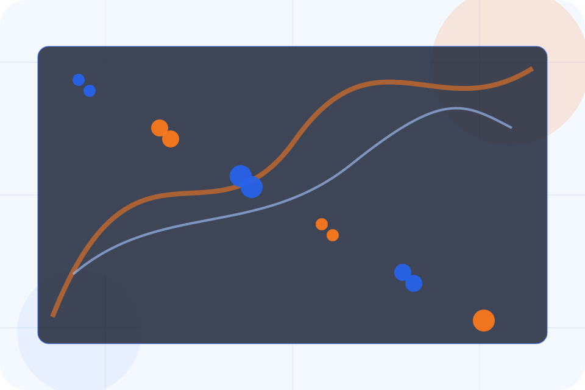
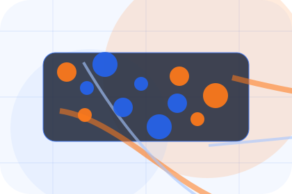
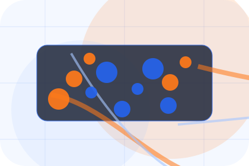
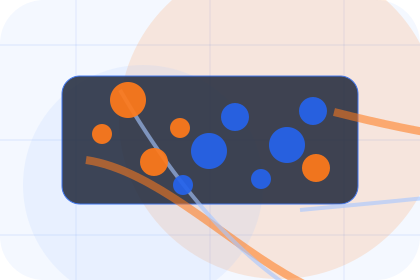
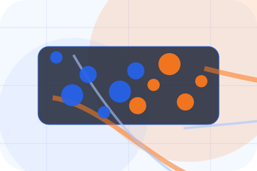
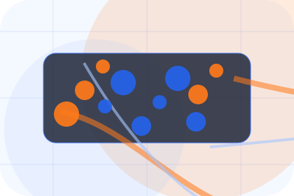
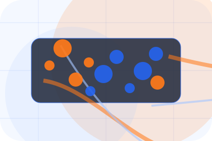
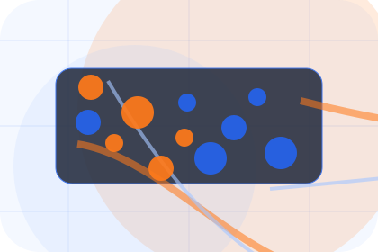
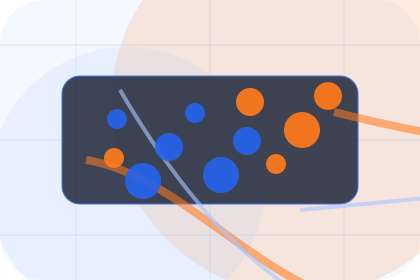
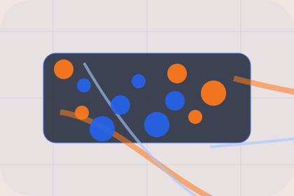

Context
Alerts gives the page a specific angle instead of repeating the navigation label.
Tracking / 01
Tracking opens as a clear logistics decision hub: what Chain offers, who it helps, why it matters, and which route to take first.
The first screen combines positioning, proof, primary action, and fast internal navigation, so people can act immediately or compare the rest of the tracking route with context.
Shipment dashboard hero
Select the closest route and Chain keeps the next step, proof, and follow-up expectation aligned with visibility and delivery control.

Tracking / 02
Status adds technical context to the tracking route, using the global freight command structure to support visibility and delivery control before visitors choose a next step.
Chain uses tracking dashboard cards and focused copy to make the decision easier to scan, aligning the section with visibility and delivery control rather than filling space.
Explore TrackingChain structures status around context, judgment, and a clear next route so visitors can compare the block quickly before they request a quote.
Request QuoteTracking / 03
Alerts adds technical context to the tracking route, using the global freight command structure to support visibility and delivery control before visitors choose a next step.
Chain uses tracking dashboard cards and focused copy to make the decision easier to scan, aligning the section with visibility and delivery control rather than filling space.
Explore Tracking

Alerts gives the page a specific angle instead of repeating the navigation label.
Tracking / 04
ETA adds technical context to the tracking route, using the global freight command structure to support visibility and delivery control before visitors choose a next step.
Chain uses tracking dashboard cards and focused copy to make the decision easier to scan, aligning the section with visibility and delivery control rather than filling space.
Explore TrackingETA gives the page a specific angle instead of repeating the navigation label.

The tracking dashboard cards show what to compare, what to avoid, and what matters most for logistics, delivery & supply chain visitors.

The final cue points to a useful internal route so the section keeps the journey moving.
Tracking / 05
Proof shows what changes after the work: clearer decisions, visible progress, and proof points that connect the offer to real outcomes.
The layout connects before-and-after thinking with measured outcomes, making the result easy to scan without promising what the business cannot guarantee.
Explore TrackingThe uncertainty, delay, or missed opportunity visitors bring into proof.
The clearer, safer, or more valuable state Chain is designed to support.
The visible cue that connects proof to a believable decision, not a loose claim.
Tracking / 06
Exceptions adds technical context to the tracking route, using the global freight command structure to support visibility and delivery control before visitors choose a next step.
Chain uses tracking dashboard cards and focused copy to make the decision easier to scan, aligning the section with visibility and delivery control rather than filling space.
Explore TrackingExceptions gives the page a specific angle instead of repeating the navigation label.
The tracking dashboard cards show what to compare, what to avoid, and what matters most for logistics, delivery & supply chain visitors.
The final cue points to a useful internal route so the section keeps the journey moving.
Tracking / 07
Documents gives researching visitors a practical route into guides, checklists, and comparison material without leaving the site structure.
Each resource behaves like a useful internal link, giving cold and warm visitors a way to learn, compare, and return to the action path.
Explore TrackingA useful entry point for visitors who need more context before they request a quote.
A scannable comparison aid that makes research usable before the next decision.
A route back to support, services, or contact when the visitor is ready to act.
Tracking / 08
Portal adds technical context to the tracking route, using the global freight command structure to support visibility and delivery control before visitors choose a next step.
Chain uses tracking dashboard cards and focused copy to make the decision easier to scan, aligning the section with visibility and delivery control rather than filling space.
Explore Tracking

Portal gives the page a specific angle instead of repeating the navigation label.
Tracking / 09
Support explains the practical scope, best-fit situations, and expected outcome so logistics visitors can compare options without decoding jargon.
The section keeps the offer concrete: what is included, who it is best for, what decision it supports, and which linked route gives the deeper detail.
Open ContactWho should use support and when it belongs in the tracking journey.

The practical benefit visitors should expect after choosing this route.

Where to compare details, pricing, support, or contact options before committing.
Tracking / 10
Chain closes the tracking route with a clear action, a quick reminder of the value, and a low-friction way to request a quote.
Visitors who are ready can use the primary action. Visitors who are still comparing can scan the section links, proof, and support routes before they request a quote.
Request QuoteThe final block keeps the choice simple: act now, compare one more proof route, or send enough detail for a focused response.
Request Quotevisibility and delivery control
A freight-command site with shipment dashboards, network maps, quote modules, and status proof. Tracking ends with a direct path to request a quote, plus enough context for visitors who still need to compare.

Request QuoteInformation is provided for planning and should be reviewed for the final client, location, and operating rules.